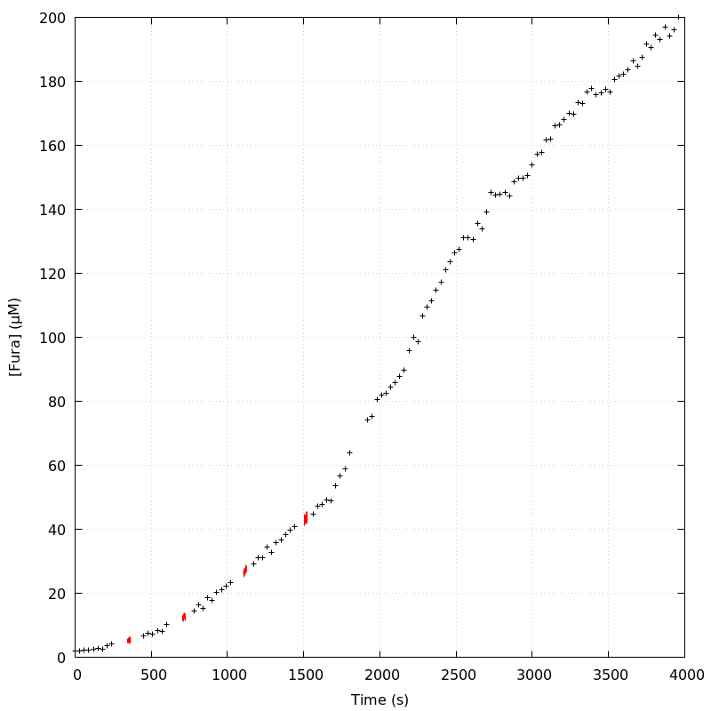
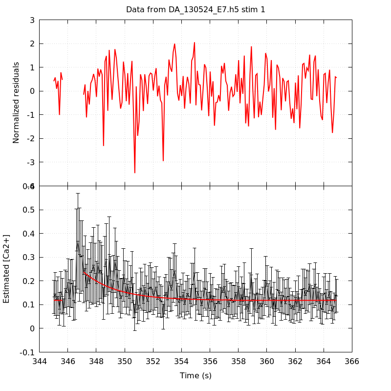
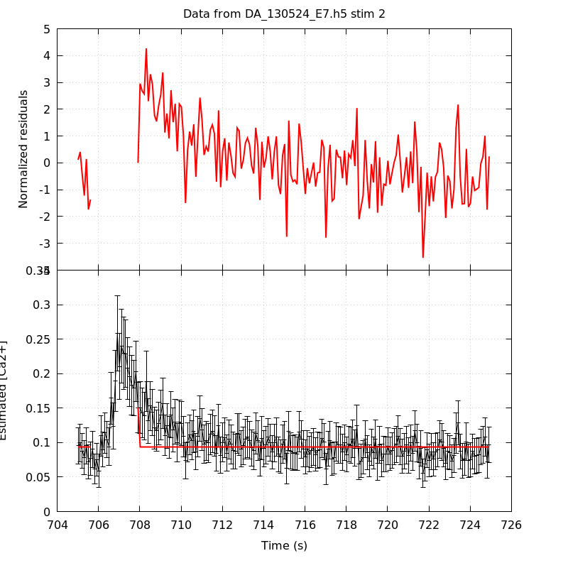
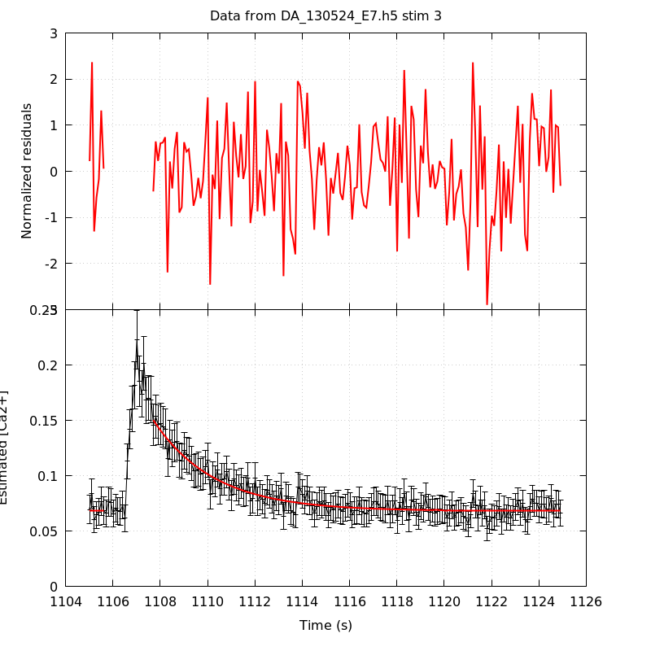
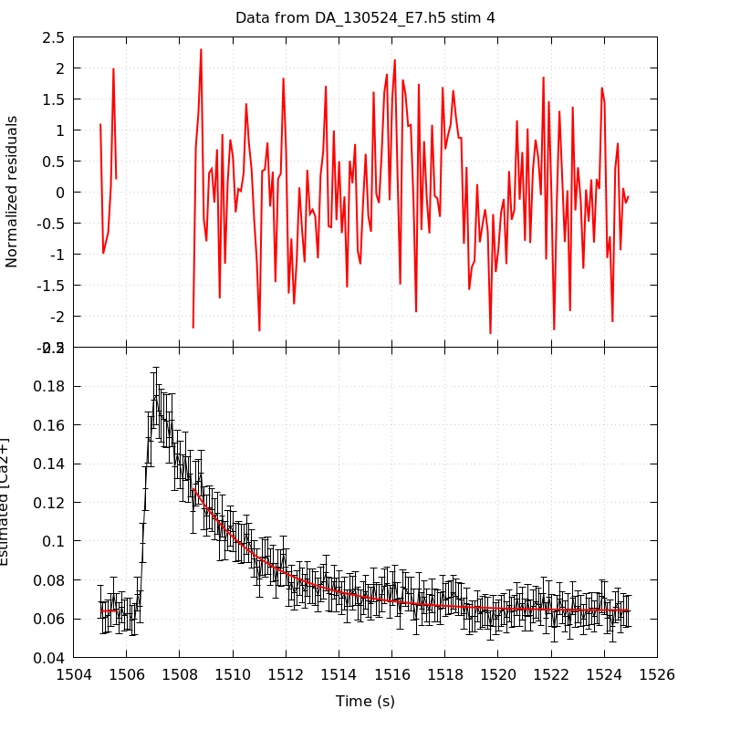
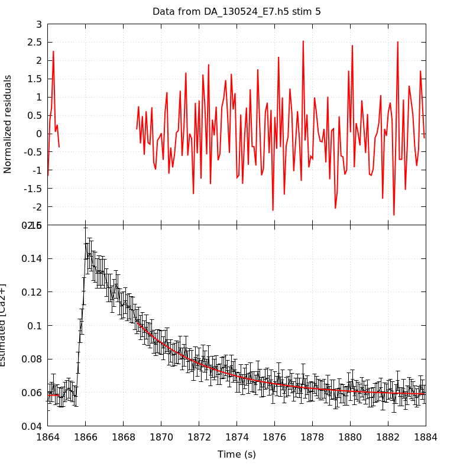
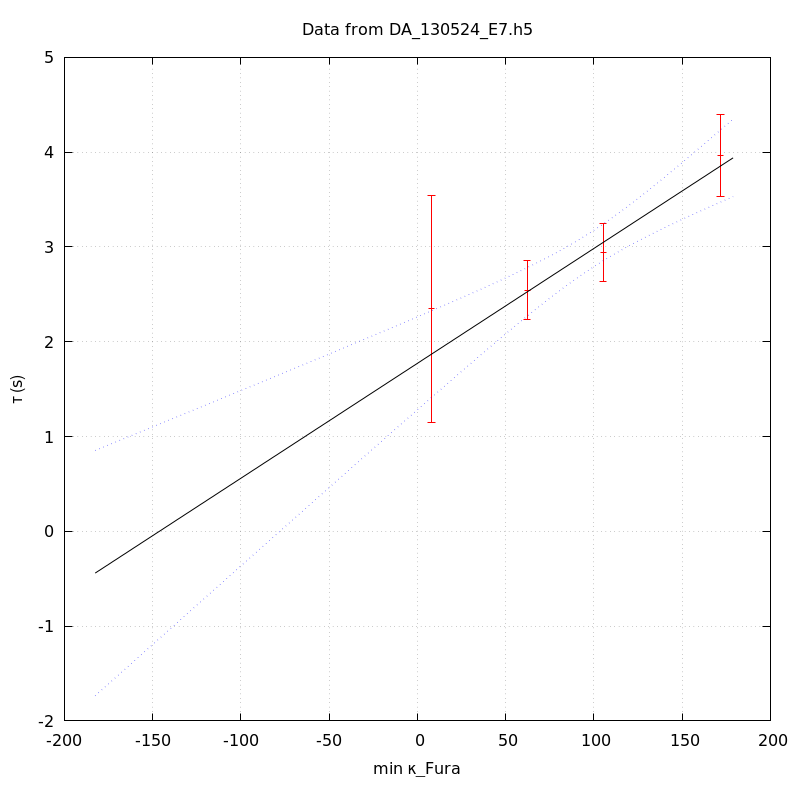
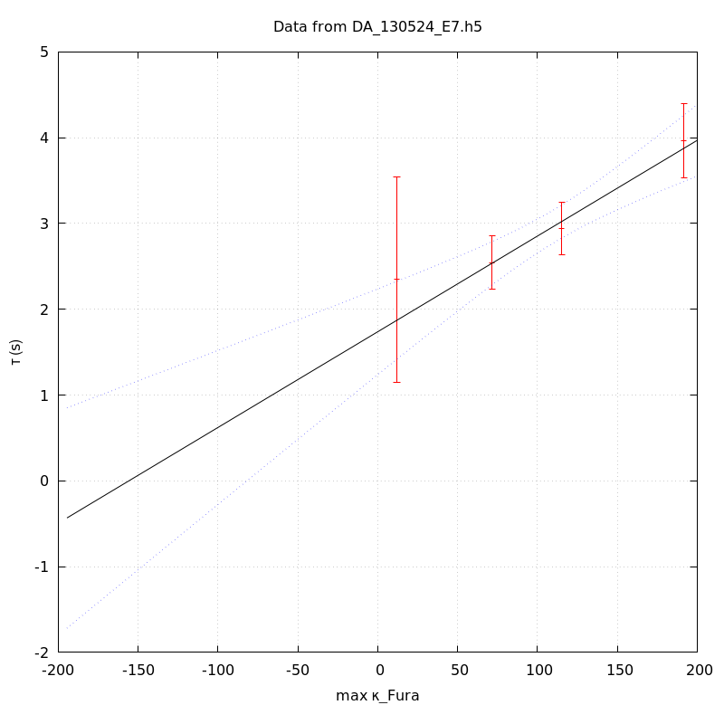

The baseline length is: 7.
When fitting tau against kappa_Fura only the transients for which the fit RSS and the lag 1 auto-correlation of the residuals were small enough, giving an overall probability of false negative of 0.02, were kept (see the numerical summary associated with each transient).
The good transients are: 1, 3, 4, 5.
The time at which the 'good' transients were recorded appear in red.

On each graph, the residuals appear on top. Under the null hypothesis, if the monoexponential fit is correct they should be centered on 0 and have a SD close to 1 (not exactly 1 since parameters were obtained through the fitting procedure form the data.
The estimated [Ca2+] appears on the second row. The estimate is show in black together with pointwise 95% confidence intervals. The fitted curve appears in red. The whole transient is not fitted, only a portion of it is: a portion of the baseline made of 7 points and the decay phase starting at the time where the Delta[Ca2+] has reached 50% of its peak value.
The time appearing on the abscissa is the time from the beginning of the experiment.
Transient 1 is 'good'.

nobs = 186
number of degrees of freedom = 183
baseline length = 7
fit started from point 21
estimated baseline 0.117889 and standard error 0.00380029
estimated delta 0.119577 and standard error 0.0224336
estimated tau 2.34616 and standard error 0.610352
residual sum of squares: 162.778
RSS per degree of freedom: 0.889498
Probability of observing a larger of equal RSS per DOF under the null hypothesis: 0.856217
Lag 1 residuals auto-correlation: 0.129
Pr[Lag 1 auto-corr. > 0.129] = 0.040
Transient 2 is a 'bad'.

nobs = 178
number of degrees of freedom = 175
baseline length = 7
fit started from point 29
estimated baseline 0.093706 and standard error 0.00102631
estimated delta 0.0571377 and standard error 0.0187565
estimated tau 0.00175563 and standard error 0
residual sum of squares: 300.33
RSS per degree of freedom: 1.71617
Probability of observing a larger of equal RSS per DOF under the null hypothesis: 1.16965e-08
WARNING: THE FIT IS NOT GOOD!
Lag 1 residuals auto-correlation: 0.715
Pr[Lag 1 auto-corr. > 0.715] = 0.000
Transient 3 is 'good'.

nobs = 180
number of degrees of freedom = 177
baseline length = 7
fit started from point 27
estimated baseline 0.068086 and standard error 0.000697476
estimated delta 0.0820713 and standard error 0.0033251
estimated tau 2.54379 and standard error 0.158424
residual sum of squares: 175.644
RSS per degree of freedom: 0.992342
Probability of observing a larger of equal RSS per DOF under the null hypothesis: 0.514664
Lag 1 residuals auto-correlation: 0.014
Pr[Lag 1 auto-corr. > 0.014] = 0.373
Transient 4 is 'good'.

nobs = 172
number of degrees of freedom = 169
baseline length = 7
fit started from point 35
estimated baseline 0.0641069 and standard error 0.00055206
estimated delta 0.0632209 and standard error 0.00193422
estimated tau 2.94258 and standard error 0.15628
residual sum of squares: 172.22
RSS per degree of freedom: 1.01905
Probability of observing a larger of equal RSS per DOF under the null hypothesis: 0.416741
Lag 1 residuals auto-correlation: 0.093
Pr[Lag 1 auto-corr. > 0.093] = 0.099
Transient 5 is 'good'.

nobs = 160
number of degrees of freedom = 157
baseline length = 7
fit started from point 47
estimated baseline 0.0582513 and standard error 0.000550247
estimated delta 0.0436697 and standard error 0.00109433
estimated tau 3.96811 and standard error 0.220803
residual sum of squares: 147.116
RSS per degree of freedom: 0.937042
Probability of observing a larger of equal RSS per DOF under the null hypothesis: 0.702681
Lag 1 residuals auto-correlation: -0.139
Pr[Lag 1 auto-corr. > -0.139] = 0.958
Since the [Fura] changes during a transient (and it can change a lot during the early transients), the unique value to use as '[Fura]' is not obvious. We therefore perform 3 fits: one using the minimal value, one using the mean and one using the maximal value.
The observed tau (shown in red) are displayed with a 95% confidence interval that results from the fitting procedure and is therefore meaningful only if the fit is correct!
No serious attempt at quantifying the precision of [Fura] and therefore kappa_Fura has been made since the choice of which [Fura] to use has a larger effect and since the other dominating effect is often the certainty we can have that the saturating value (the [Fura] in the pipette) has been reached.
The straight line in black is the result of a weighted linear regression. The blue dotted lines correspond to the limits of pointwise 95% confidence intervals.

Best fit: tau = 1.77285 + 0.0121204 kappa_Fura
Covariance matrix:
[ +6.25250e-02, -5.32695e-04
-5.32695e-04, +5.36334e-06 ]
Total sum of squares (TSS) = 28.742
chisq (Residual sum of squares, RSS) = 1.35135
Probability of observing a larger of equal RSS per DOF under the null hypothesis: 0.508812
R squared (1-RSS/TSS) = 0.952983
Estimated gamma/v with standard error: 82.5052 +/- 15.7645
Estimates kappa_S with standard error (using error propagation): 145.269 +/- 34.7377
kappa_S confidence intervals based on parametric bootstrap
0.95 CI for kappa_S: [76.4857,294.925]
0.99 CI for kappa_S: [60.213,387.768]
Best fit: tau = 1.75973 + 0.0115694 kappa_Fura
Covariance matrix:
[ +6.31837e-02, -5.09259e-04
-5.09259e-04, +4.84153e-06 ]
Total sum of squares (TSS) = 28.742
chisq (Residual sum of squares, RSS) = 1.09542
Probability of observing a larger of equal RSS per DOF under the null hypothesis: 0.578272
R squared (1-RSS/TSS) = 0.961888
Estimated gamma/v with standard error: 86.4347 +/- 16.4387
Estimates kappa_S with standard error (using error propagation): 151.102 +/- 36.1781
kappa_S confidence intervals based on parametric bootstrap
0.95 CI for kappa_S: [79.6982,307.537]
0.99 CI for kappa_S: [66.0618,408.438]

Best fit: tau = 1.73889 + 0.011156 kappa_Fura
Covariance matrix:
[ +6.49455e-02, -4.98671e-04
-4.98671e-04, +4.49447e-06 ]
Total sum of squares (TSS) = 28.742
chisq (Residual sum of squares, RSS) = 1.05093
Probability of observing a larger of equal RSS per DOF under the null hypothesis: 0.591281
R squared (1-RSS/TSS) = 0.963436
Estimated gamma/v with standard error: 89.6378 +/- 17.0342
Estimates kappa_S with standard error (using error propagation): 154.87 +/- 37.406
kappa_S confidence intervals based on parametric bootstrap
0.95 CI for kappa_S: [80.7846,307.464]
0.99 CI for kappa_S: [64.9674,401.518]
4 out of 5 transients were kept.
sigma(tau): 0.610352, 0.158424, 0.15628, 0.220803
Residual correlation at lag 1: 0.12867596516243548, 0.013762481798966482, 0.09274565592947634, -0.13870830732672906
Probablity of a correlation at lag 1 smaller or equal than observed: 0.040000000000000036, 0.373, 0.09899999999999998, 0.958
RSS/DOF: 0.889498, 0.992342, 1.01905, 0.937042